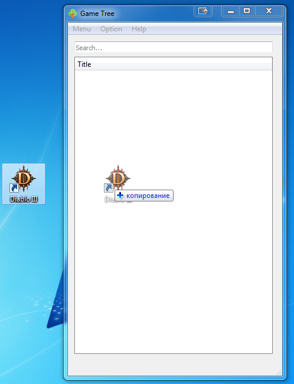
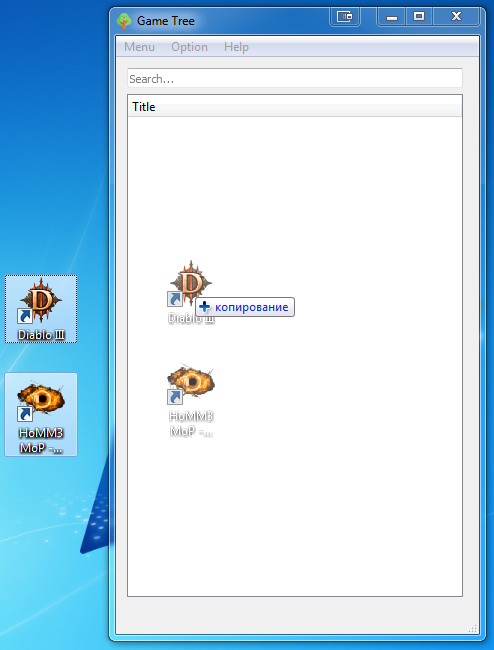
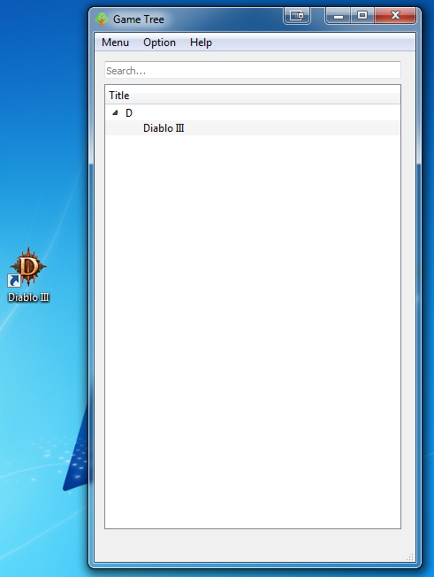
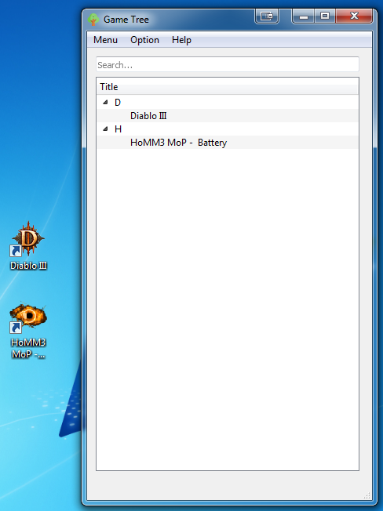

Механизм Drag & Drop позволяет перетаскивать объекты между приложениями или внутри одного приложения.
В данном приложении Вы можете воспользоваться этим механизмом, чтобы добавить игры(приложения) в список. Для этого:

